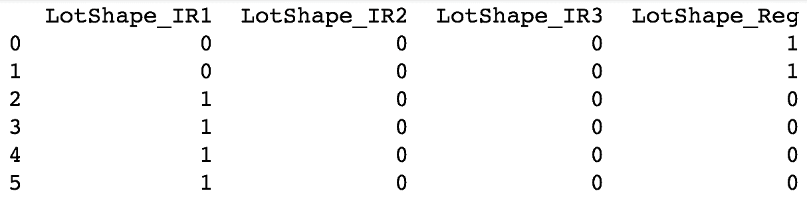
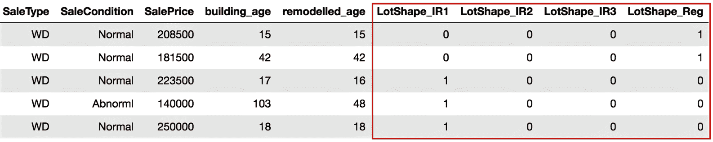
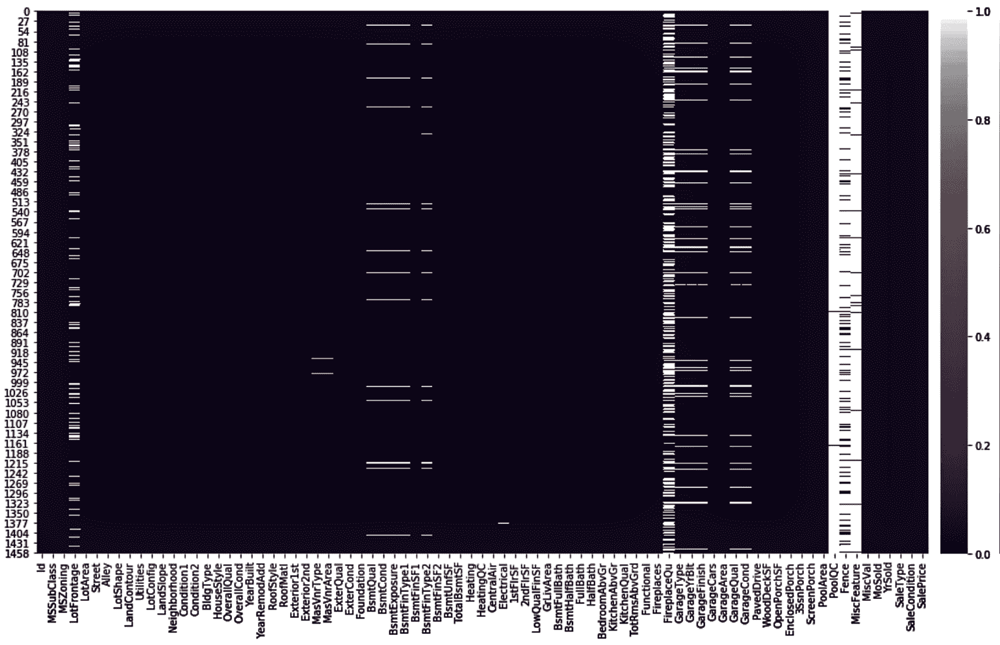
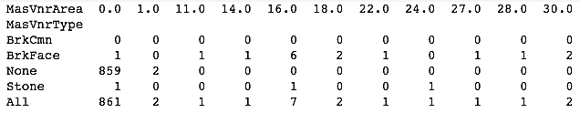
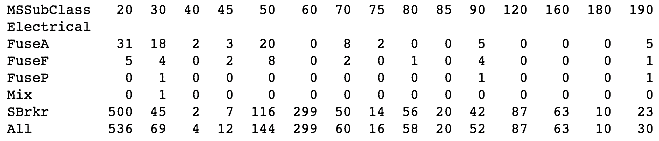
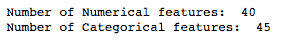
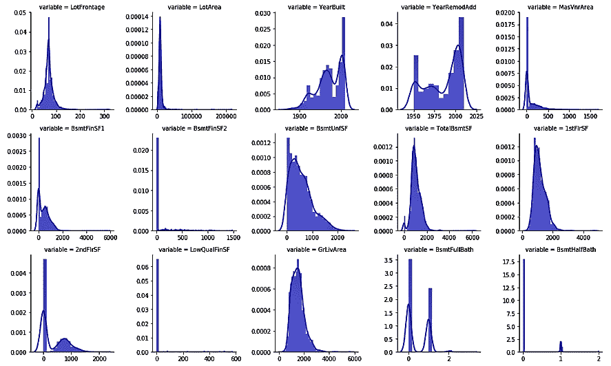
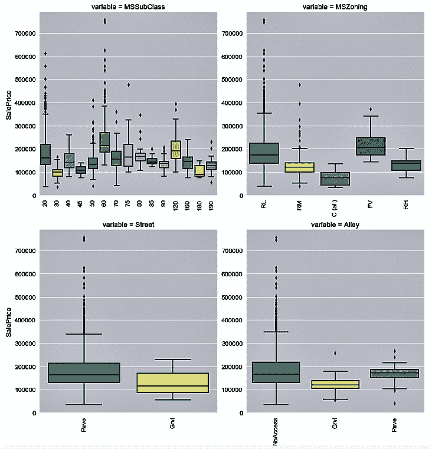
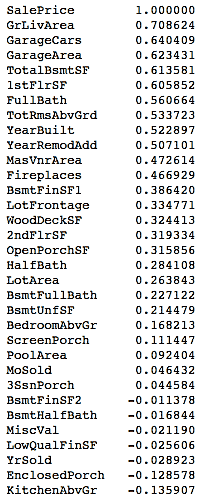
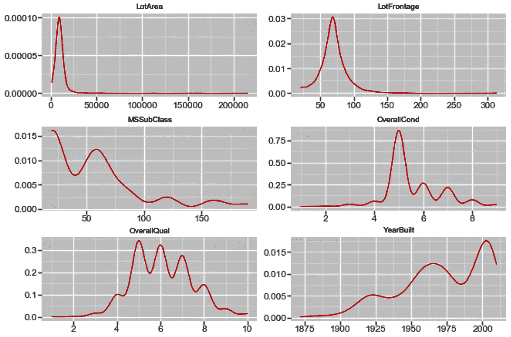

在本章中，我们将介绍以下配方:
在本书中，我们将涵盖各种集成技术，并将学习如何集成多种机器学习算法来增强模型的性能。我们将使用 pandas、NumPy、scikit-learn 和 Matplotlib，所有这些都是为使用 Python 而构建的，正如我们将在整本书中所做的那样。到目前为止，您应该非常了解数据操作和探索。
在本章中，我们将回顾如何在 Python 中读取和操作数据，如何分析和处理缺失值，以及如何探索数据以获得更深入的见解。我们将使用各种 Python 包，比如用于数据操作和探索的numpy和pandas，以及用于数据可视化的seaborn包。在本书后面的章节中，我们将继续使用这些库的一部分或全部。我们还将使用 Anaconda 发行版进行 Python 编码。如果你没有安装 Anaconda，你需要从https://www.anaconda.com/download下载。在写这本书的时候，Anaconda 的最新版本是 5.2，同时提供了 Python 3.6 和 Python 2.7。我们建议您下载 Python 3.6 版的 Anaconda。我们还将使用 GitHub 上提供的HousePrices数据集。
在现实生活中，通常很难获得完全按照我们需要的格式编排的完整、干净的数据集。我们收到的数据往往不能直接用于统计或机器学习算法。我们需要处理原始数据，以便处理后的数据可以用于进一步的分析和建模。首先，我们需要导入所需的包，比如pandas，并将数据集读入 Python。
我们将在操作系统的相关功能中使用os包，在数据操作中使用pandas包。
现在让我们看一下数据定义来理解我们的变量。在下面的代码中，我们列出了几个变量的数据定义。GitHub 上提供了数据集和完整的数据定义。以下是数据描述文件的节略版本:
MS SubClass (Nominal): Identifies the type of dwelling involved in the sale
Lot Frontage (Continuous): Linear feet of street connected to property
Alley (Nominal): Type of alley access to property
Overall Qual (Ordinal): Rates the overall material and finish of the house
Overall Cond (Ordinal): Rates the overall condition of the house
Year Built (Discrete): Original construction date
Mas Vnr Type (Nominal): Masonry veneer type
Mas Vnr Area (Continuous): Masonry veneer area in square feet
Garage Type (Nominal): Garage location
Garage Yr Blt (Discrete): Year garage was built
Garage Finish (Ordinal): Interior finish of the garage
Garage Cars (Discrete): Size of garage in car capacity
Garage Area (Continuous): Size of garage in square feet
Garage Qual (Ordinal): Garage quality
Garage Cond (Ordinal): Garage condition
...
...
SalePrice (Continuous): Sale price $$
然后，我们将导入os和pandas包，并根据我们的需求设置我们的工作目录，如下面的代码块所示:
import os
import pandas as pd
# Set working directory as per your need
os.chdir(".../.../Chapter 1")
os.getcwd()
下一步是从 GitHub 下载数据集，并将其复制到您的工作目录中。
现在，让我们执行一些数据操作步骤:
housepricesdata = pd.read_csv("HousePrices.csv")
# See first five observations from top
housepricesdata.head(5)
您可能看不到所有的行；朱庇特会截断一些变量。为了在 Jupyter 中查看任何输出的所有行和列，请执行以下命令:
# Setting options to display all rows and columns
pd.options.display.max_rows = None
pd.options.display.max_columns = None
housepricesdata.shape
使用前面的命令，我们可以看到行数和列数，如下所示:
(1460, 81)
在这里，我们可以看到数据帧有1460观察值和81列。
housepricesdata.dtypes
在下面的代码块中，我们可以看到数据帧中每个变量的数据类型:
Id int64
MSSubClass int64
MSZoning object
LotFrontage float64
LotArea int64
LotConfig object
LandSlope object
...
BedroomAbvGr int64
KitchenAbvGr int64
KitchenQual object
TotRmsAbvGrd int64
SaleCondition object
SalePrice int64
Length: 81, dtype: object
我们现在已经准备好开始我们的数据操作，我们可以用许多不同的方式来做。在这一节中，我们将看一些方法，在这些方法中，我们可以操纵和准备我们的数据，以便进行分析。
让我们从总结我们的数据开始。
housepricesdata.describe()
我们可以在下面的截图中看到输出:
# inplace=True will overwrite the DataFrame after dropping Id column
housepricesdata.drop(['Id'], axis=1, inplace=True)
# Name the count column as "count"
lotshape_frequencies = pd.crosstab(index=housepricesdata["LotShape"], columns="count")
landcountour_frequencies = pd.crosstab(index=housepricesdata["LandContour"], columns="count") # Name the count column as "count"
print(lotshape_frequencies)
print("\n") # to keep a blank line for display
print(landcountour_frequencies)
在对任何变量进行类型转换之前，请确保没有丢失值。
这里，我们将把变量转换成分类数据类型:
# Using astype() to cast a pandas object to a specified datatype
housepricesdata['MSSubClass'] = housepricesdata['MSSubClass'].astype('object')
housepricesdata['OverallQual'] = housepricesdata['OverallQual'].astype('object')
housepricesdata['OverallCond'] = housepricesdata['OverallCond'].astype('object')
# Check the datatype of MSSubClass after type conversion
print(housepricesdata['MSSubClass'].dtype)
print('\n') # to keep a blank line for display
# Check the distribution of the levels in MSSubClass after conversion
# Make a crosstab with pd.crosstab()
# Name the count column as "count"
print(pd.crosstab(index=housepricesdata["MSSubClass"], columns="count"))
我们可以看到每类房屋的观察计数，如下面的代码块所示:
category col_0 count MSSubClass 20 536 30 69 40 4 45 12 50 144 60 299 70 60 75 16 80 58 85 20 90 52 120 87 160 63 180 10 190 30
有许多变量本身可能不是很有用，但是转换它们会给我们很多有趣的见解。让我们创建一些新的，有意义的变量。
# Importing datetime package for date time operations
import datetime as dt
# using date time package to find the current year
current_year = int(dt.datetime.now().year)
# Subtracting the YearBuilt from current_year to find out the age of the building
building_age = current_year - housepricesdata['YearBuilt']
# Subtracting the YearRemonAdd from current_year to find out the age since the
# building was remodelled
remodelled_age = current_year - housepricesdata['YearRemodAdd']
# Adding the two variables to the DataFrame
housepricesdata['building_age'] = building_age
housepricesdata['remodelled_age'] = remodelled_age
# Checking our DataFrame to see if the two variables got added
housepricesdata.head(5)
我们注意到building_age和remodelled_age现在被添加到数据帧中，如下面的屏幕截图所示:

包含标签数据的变量需要转换成数字形式，以供机器学习算法使用。为了解决这个问题，我们将执行编码，将标签转换为数字形式，以便算法可以使用它们。
# We use get_dummies() function to one-hot encode LotShape
one_hot_encoded_variables = pd.get_dummies(housepricesdata['LotShape'],prefix='LotShape')
# Print the one-hot encoded variables to see how they look like
print(one_hot_encoded_variables)
我们可以在下面的屏幕截图中看到已经创建的一次性编码变量:

# Adding the new created one-hot encoded variables to our DataFrame
housepricesdata = pd.concat([housepricesdata,one_hot_encoded_variables],axis=1)
# Let's take a look at the added one-hot encoded variables
# Scroll right to view the added variables
housepricesdata.head(5)
在下面的屏幕截图中，我们可以看到将一位热码编码变量添加到数据帧后得到的输出:

# Dropping the original variable after one-hot encoding the original variable
# inplace = True option will overwrite the DataFrame
housepricesdata.drop(['LotShape'],axis=1, inplace=True)
pandas模块是 Python 标准库的一部分——它是数据操作的关键模块之一。我们也用过其他的包，比如os和datetime。在我们设置了工作目录并将 CSV 文件作为pandas数据帧读入 Python 之后，我们继续研究一些数据操作方法。
上一节的步骤 1 到步骤 5 向我们展示了如何使用pandas从 Python 中的 CSV 文件读取数据，以及如何使用dtypes等函数。
pandas包还提供了从各种文件类型中读取数据的方法。例如，pandas.read_excel()将 Excel 表格读入pandasdata frame；pandas.read_json()将 JSON 字符串转换成pandas对象；并且pandas.read_parquet()从文件路径加载一个 parquet 对象并返回pandas数据帧。有关这方面的更多信息可以在 https://bit.ly/2yBqtvd找到。
还可以使用h5py包读取 Python 中的 HDF5 格式文件。h5py包是 HDF5 二进制数据格式的 Python 接口。HDF 支持 n 维数据集，数据集中的每个元素本身都可能是一个复杂的对象。集合中数据对象的数量或大小没有限制。更多信息可以在https://www.hdfgroup.org/找到。示例代码块如下所示:
import h5py
# With 'r' passed as a parameter to the h5py.File()
# the file will be read in read-only mode
data = h5py.File('File Name.h5', 'r')
我们查看变量的数据类型，并使用describe()查看数字变量的汇总统计数据。我们需要注意的是describe()只对数值型变量起作用，并且足够智能，可以忽略非数值型变量。在步骤 6 中，我们看到了如何查看分类变量(如LotShape和LandContour)的每个级别的计数。我们可以用同样的代码来看看其他分类变量的分布。
在步骤 7 中，我们使用pd.crosstab()查看了LotShape和LandContour变量的分布。
交叉表中的一个常见需求是包含行和列的小计。我们可以使用关键字margins显示小计。我们将margins=True传递给pd.crosstab()函数。我们还可以使用关键字margins_name给小计列命名。margins_name的默认值为All。
然后我们继续学习如何转换数据类型。我们有一些变量实际上是分类的，但在数据集中似乎是数字的。现实生活中经常会出现这种情况，因此我们需要学习如何对变量进行类型转换。第 8 步向我们展示了如何将一个数字变量，比如MSSubClass，转换成一个分类类型。在步骤 8 中，我们将一些变量转换成分类数据类型。然后我们创建了一个交叉表来可视化每一级分类变量的频率。
在步骤 9 中，我们从现有变量中创建了新的有意义的变量。我们分别从YearBuilt和YearRemodAdd中创建了新的变量BuildingAge和RemodelAge，来表示建筑的年龄和自建筑被改造以来已经过去的年数。这种创建新变量的方法可以为我们的分析和建模提供更好的见解。这个创建新特征的过程被称为特征工程。在步骤 10 中，我们将新变量添加到我们的数据框架中。
从那里，我们继续对我们的分类变量进行编码。我们需要对我们的分类变量进行编码，因为它们有命名的描述。许多机器学习算法无法对带标签的数据进行操作，因为它们要求所有输入和输出变量都是数字。在步骤 12 中，我们用一键编码对它们进行编码。在步骤 11 中，我们学习了如何使用get_dummies()函数，它是pandas包的一部分，来创建独热编码变量。在步骤 12 中，我们将one-hot_encoded_variables添加到我们的数据帧中。最后，在步骤 13 中，我们删除了现在被一键编码的原始变量。
所需的数据操作类型取决于您的业务需求。在第一个方法中，我们看到了一些执行数据操作的方法，但是对于您可以做什么以及如何操作数据进行分析没有限制。
我们还看到了如何将数字变量转换成分类变量。我们可以用很多方法来做这种类型转换。例如，如果需要，我们可以使用以下代码将分类变量转换为数值变量:
# Converting a categorical variable to numerical
# Using astype() to cast a pandas object to a specified datatype
# Here we typecast GarageYrBlt from float64 type to int64 type
housepricesdata['GarageYrBlt'] = housepricesdata['GarageYrBlt'].astype('int64')
只有当GarageYrBlt变量不包含任何缺失值时，才能转换该变量。前面的代码将抛出一个错误，因为GarageYrBlt包含缺失值。
我们已经了解了如何使用一键编码将分类变量转换为数值变量，以及为什么要这样做。除了一键编码之外，我们还可以执行其他类型的编码，例如标签编码、频率编码等等。下面的代码块给出了标签编码的示例代码:
# We use sklearn.preprocessing and import LabelEncoder class
from sklearn.preprocessing import LabelEncoder
# Create instance of LabelEncoder class
lb_make = LabelEncoder()
# We create a new variable LotConfig_code to hold the new numerical labels
# We label encode LotConfig variable
housepricesdata["LotConfig_Code"] = lb_make.fit_transform(housepricesdata["LotConfig"])
# Display the LotConfig variable and its corresponding label encoded numerical values
housepricesdata[["LotConfig", "LotConfig_Code"]]
缺失值是由不完整的数据引起的。有效处理缺失值非常重要，因为它们会导致不准确的推断和结论。在本节中，我们将了解如何分析、可视化和处理缺失值。
让我们从分析缺失值的变量开始。设置 pandas 中的选项以查看所有行和列，如前一节所示:
# Check which variables have missing values
columns_with_missing_values = housepricesdata.columns[housepricesdata.isnull().any()]
housepricesdata[columns_with_missing_values].isnull().sum()
这将产生以下输出:

import numpy as np
import matplotlib.pyplot as plt
%matplotlib inline
# To hold variable names
labels = []
# To hold the count of missing values for each variable
valuecount = []
# To hold the percentage of missing values for each variable
percentcount = []
for col in columns_with_missing_values:
labels.append(col)
valuecount.append(housepricesdata[col].isnull().sum())
# housepricesdata.shape[0] will give the total row count
percentcount.append(housepricesdata[col].isnull().sum()/housepricesdata.shape[0])
ind = np.arange(len(labels))
fig, (ax1, ax2) = plt.subplots(1,2,figsize=(20,18))
rects = ax1.barh(ind, np.array(valuecount), color='blue')
ax1.set_yticks(ind)
ax1.set_yticklabels(labels, rotation='horizontal')
ax1.set_xlabel("Count of missing values")
ax1.set_title("Variables with missing values")
rects = ax2.barh(ind, np.array(percentcount), color='pink')
ax2.set_yticks(ind)
ax2.set_yticklabels(labels, rotation='horizontal')
ax2.set_xlabel("Percentage of missing values")
ax2.set_title("Variables with missing values")
它将以绝对值和百分比的形式显示缺失的值，如下面的屏幕截图所示:

我们注意到，变量 Alley 、 PoolQC 、 Fence 和misfeature有 80% 到 90% 的值缺失。 FireplaceQu 有 47.26% 的值缺失。其他一些变量，如 LotFrontage 、 MasVnrType 、 MasVnrArea 、 BsmtQual 、 BsmtCond ，以及其他一些与车库相关的变量也有缺失值。
但是有一个问题。我们再来看一下Alley变量。它显示它有 93.76% 的缺失值。现在再看一下我们在上一节中看到的数据描述。Alley的变量描述显示其有三个级别:砾石、铺砌、无通路。在原始数据集中，'No Access'被编码为NA。在 Python 中读取NA时，它被当作 NaN ，这意味着缺少一个值，所以我们需要小心。
# Replacing missing values with 'No Access' in Alley variable
housepricesdata['Alley'].fillna('No Access', inplace=True)
# Lets import seaborn. We will use seaborn to generate our charts
import seaborn as sns
# We will import matplotlib to resize our plot figure
import matplotlib.pyplot as plt
%matplotlib inline
plt.figure(figsize=(20, 10))
# cubehelix palette is a part of seaborn that produces a colormap
cmap = sns.cubehelix_palette(light=1, as_cmap=True, reverse=True)
sns.heatmap(housepricesdata.isnull(), cmap=cmap)
通过cubehelix_palette()功能生成亮度线性增加的地图颜色:

从前面的图中，可以更容易地看出缺失值的分布。图表上的白色标记表示缺少的值。注意Alley不再报告任何丢失的值。
# Filling in the missing values in LotFrontage with its median value
housepricesdata['LotFrontage'].fillna(housepricesdata['LotFrontage'].median(), inplace=True)
让我们再次查看缺失值图，看看来自LotFrontage的缺失值是否已被估算。复制并执行前面的代码。缺失值图如下所示:
这里，我们可以在前面的图中看到，Alley或LotFrontage不再有缺失值。
我们从数据描述中发现，有几个变量的值被编码为NA。因为这在 Python 中被读取为缺失值，所以我们用它们的实际值替换所有这些值，我们可以在下面的代码块中显示的数据描述中看到这些值:
# Replacing all NA values with their original meaning
housepricesdata['BsmtQual'].fillna('No Basement', inplace=True)
housepricesdata['BsmtCond'].fillna('No Basement', inplace=True)
housepricesdata['BsmtExposure'].fillna('No Basement', inplace=True)
housepricesdata['BsmtFinType1'].fillna('No Basement', inplace=True)
housepricesdata['BsmtFinType2'].fillna('No Basement', inplace=True)
housepricesdata['GarageYrBlt'].fillna(0, inplace=True)
# For observations where GarageType is null, we replace null values in GarageYrBlt=0
housepricesdata['GarageType'].fillna('No Garage', inplace=True)
housepricesdata['GarageFinish'].fillna('No Garage', inplace=True)
housepricesdata['GarageQual'].fillna('No Garage', inplace=True)
housepricesdata['GarageCond'].fillna('No Garage', inplace=True)
housepricesdata['PoolQC'].fillna('No Pool', inplace=True)
housepricesdata['Fence'].fillna('No Fence', inplace=True)
housepricesdata['MiscFeature'].fillna('None', inplace=True)
housepricesdata['FireplaceQu'].fillna('No Fireplace', inplace=True)

我们从前面的图中注意到，对于我们刚刚处理过的变量，不再有丢失的值。然而，我们在MasVnrType、MasVnrArea和Electrical中留下了一些缺失的值。
让我们用一个交叉表来看看MasVnrArea对MasVnrType的分布:
# Using crosstab to generate the count of MasVnrType by type of MasVnrArea
print(pd.crosstab(index=housepricesdata["MasVnrType"],\
columns=housepricesdata["MasVnrArea"], dropna=False, margins=True))

然后，我们将在MasVnrType中用None和MasVnrArea中用零来估算缺失值。这是通过以下代码块中显示的命令完成的:
# Filling in the missing values for MasVnrType and MasVnrArea with None and 0 respectively
housepricesdata['MasVnrType'].fillna('None', inplace=True)
housepricesdata['MasVnrArea'].fillna(0, inplace=True)
让我们看看Electrical有一个缺失值的观察结果:
housepricesdata['MSSubClass'][housepricesdata['Electrical'].isnull()]
我们看到当Electrical为空时MSSubClass为80。让我们看看MSSubClass的Electrical型的分布:
# Using crosstab to generate the count of Electrical Type by MSSubClass
print(pd.crosstab(index=housepricesdata["Electrical"],\
columns=housepricesdata['MSSubClass'], dropna=False, margins=True))

继续执行以下代码，用SBrKr估算Electrical变量中的缺失值:
housepricesdata['Electrical'].fillna('SBrkr', inplace=True)
import seaborn as sns
import matplotlib.pyplot as plt
%matplotlib inline
plt.figure(figsize=(20, 10))
cmap = sns.cubehelix_palette(light=1, as_cmap=True, reverse=True)
sns.heatmap(housepricesdata.isnull(), cmap=cmap)

请注意，图已经改变，现在在我们的数据框架中没有显示缺失值。
它是如何工作的...
注意，我们在步骤 2 中使用了%matplotlib inline。这是一个神奇的功能，可以渲染笔记本本身的剧情。
在步骤 4 中，我们使用了seaborn库来绘制缺失值图表。在这个图表中，我们确定了缺少值的变量。缺失的值用白色表示，而存在的数据用彩色表示。我们从图表中注意到Alley不再有丢失的值。
在步骤 4 中，我们使用了seaborn库中的cubehelix_palette()，它产生了一个亮度线性降低(或增加)的彩色地图。seaborn库还为我们提供了包括light_palette()和dark_palette()在内的选项。light_palette()给出从亮到色混合的连续调色板，而dark_palette()产生从暗到色混合的连续调色板。
在步骤 5 中，我们注意到其中一个数值变量LotFrontage有超过 17% 的值缺失。我们决定用这个变量的中间值来估算缺失值。我们重新查看了步骤 6 中的缺失值图表，以查看变量是否有缺失值。我们注意到Alley和LotFrontage没有显示白色标记，这表明这两个变量都没有任何进一步缺失的值。
在步骤 7 中，我们确定了一些变量，这些变量的数据用NA编码。这导致了我们之前遇到的同样的问题，因为 Python 将它们视为缺失值。我们用实际信息取代了所有这些编码值。
然后，我们在步骤 8 中重新查看了缺失值图表。我们看到，除了MasVnrType、MasVnrArea和Electrical，几乎所有的变量都没有缺失值。
在第 9 步和第 10 步中，我们填充了MasVnrType和MasVnrArea变量的缺失值。我们注意到，每当MasVnrArea是0.0的时候MasVnrType就是None，除了一些极少数的场合。因此，我们用None估算MasVnrType变量，用0.0估算MasVnrArea变量，只要这两个变量有缺失值。然后我们只剩下一个缺少值的变量，Electrical。
在步骤 11 中，我们查看了哪种类型的房屋缺少Electrical值。我们注意到MSSubClass表示住宅类型，对于缺少的Electrical 值，MSSubClass是80，这意味着它是分割的或多层次的。在步骤 12 中，我们按住宅类型查看了Electrical的分布，为MSSubClass。我们注意到当MSSubClass等于80时，Electrical的大部分值是SBrkr，代表标准断路器和 Romex。为此，我们决定用SBrkr来估算Electrical中缺失的值。
最后，在步骤 14 中，我们再次查看缺失值图表，发现数据集中不再有缺失值。
还有更多...
对于数据分析师来说，理解数据描述并恰当地处理缺失值是非常重要的。
通常，丢失的数据分为三类:
完全随机缺失 ( MCAR ): MCAR 表示缺失值与被研究对象无关。换句话说，当一个变量缺失数据的概率与其他测量变量或值本身无关时，数据就是 MCAR。这方面的一个例子可能是，某项调查中某些被调查者的年龄没有被记录下来，这完全是偶然的。
寻找缺失数据的来源
怎么做...
通过前面的代码，我们可以看到前面部分中变量的汇总统计数据。
# To take a look at the top 5 rows in the dataset
housepricesdata.head(5)
# To display the summary statistics for all variables
housepricesdata.describe()
下面的代码向我们展示了每种数据类型有多少个变量。我们可以看到，我们有 3 个浮点类型变量、33 个整数类型变量、45 个对象类型变量和 4 个无符号整数，它们保存了LotShape变量的一位热码编码值:
# How many columns with different datatypes are there?
housepricesdata.get_dtype_counts()

让我们创建两个变量来保存数值变量和分类变量的名称:
# Pulling out names of numerical variables by conditioning dtypes NOT equal to object type
numerical_features = housepricesdata.dtypes[housepricesdata.dtypes != "object"].index
print("Number of Numerical features: ", len(numerical_features))
# Pulling out names of categorical variables by conditioning dtypes equal to object type
categorical_features = housepricesdata.dtypes[housepricesdata.dtypes == "object"].index
print("Number of Categorical features: ", len(categorical_features))

我们现在将使用之前创建的numerical_features变量来查看数值变量的分布。我们将使用seaborn库来绘制图表:
上述代码使用分布图向我们展示了数值变量观测值的单变量分布:
melt_num_features = pd.melt(housepricesdata, value_vars=numerical_features)
grid = sns.FacetGrid(melt_num_features, col="variable", col_wrap=5, sharex=False, sharey=False)
grid = grid.map(sns.distplot, "value", color="blue")

现在，我们使用categorical_features变量来绘制每个分类变量的房价分布图:
melt_cat_features = pd.melt(housepricesdata, id_vars=['SalePrice'], value_vars=categorical_features)
grid = sns.FacetGrid(melt_cat_features, col="variable", col_wrap=2, sharex=False, sharey=False, size=6)
grid.map(sns.boxplot, "value", "SalePrice", palette="Set3")
grid.fig.subplots_adjust(wspace=1, hspace=0.25)
for ax in grid.axes.flat:
plt.setp(ax.get_xticklabels(), rotation=90)
让我们在下面的图中看到每个分类变量的房屋销售价格分布:

我们现在将使用以下代码来查看所有数值变量的相关矩阵:
# Generate a correlation matrix for all the numerical variables
corr=housepricesdata[numerical_features].corr()
print(corr)

可能很难查看前面格式中显示的相关性。你可能想用图表来看看这种相关性。
我们还可以查看数值变量的相关矩阵图。为此，我们使用在步骤 3 中创建的numerical_features变量来保存所有数值变量的名称:
# Get correlation of numerical variables
df_numerical_features= housepricesdata.select_dtypes(include=[np.number])
correlation= df_numerical_features.corr()
correlation["SalePrice"].sort_values(ascending=False)*100
# Correlation Heat Map (Seaborn library)
f, ax= plt.subplots(figsize=(14,14))
plt.title("Correlation of Numerical Features with Sale Price", y=1, size=20)
# cmap - matplotlib colormap name or object - can be used to set the color options
# vmin and vmax is used to anchor the colormap
sns.heatmap(correlation, square= True, vmin=-0.2, vmax=0.8, cmap="YlGnBu")
In the preceding code, we used select_dtypes(include=[np.number]) to create the df_numeric_features variable. However, in Step 3, we used dtypes[housepricesdata.dtypes != "object"].index. Note that select_dtypes() returns a pandas.DataFrame, whereas dtypes[].index returns a pandas.Index object.
我们现在可以将相关图可视化如下:

您可能还想评估数值变量与SalePrice的相关性，以了解这些数值变量与房价的关系:
row_count = 11
col_count = 3
fig, axs = plt.subplots(row_count, col_count, figsize=(12,36))
exclude_columns = ['Id', 'SalePrice']
plot_numeric_features = [col for col in numerical_features if col not in exclude_columns]
for eachrow in range(0, row_count):
for eachcol in range(0, col_count):
i = eachrow*col_count + eachcol
if i < len(plot_numeric_features):
sns.regplot(housepricesdata[plot_numeric_features[i]], housepricesdata['SalePrice'], \
ax = axs[eachrow][eachcol], color='purple', fit_reg=False)
# tight_layout automatically adjusts subplot params so that the subplot(s) fits in to the figure area
plt.tight_layout()
plt.show()

如果您想要评估数值变量与房屋销售价格之间的相关性，可以使用以下命令:
# See correlation between numerical variables with house prices
corr=housepricesdata.corr()["SalePrice"]
# Sort the correlation values.
# Use [::-1] to sort it in descending manner
# Use [::+1] to sort it in ascending manner
corr[np.argsort(corr)[::-1]]

它是如何工作的...
在步骤 3 中，我们创建了两个变量，即numerical_features和categorical_features，分别存放数值型和分类型变量的名称。当我们分别处理数字和分类特征时，我们在步骤中使用了这两个变量。
In Step 3, we created two variables, namely, numerical_features and categorical_features, to hold the names of numerical and categorical variables respectively. We used these two variables in the steps when we worked with numerical and categorical features separately.
在步骤 4 和步骤 5 中，我们使用seaborn库来绘制我们的图表。我们还引入了来自 pandas 的melt()函数，该函数可用于重塑我们的数据帧，并将其提供给seaborn库的FacetGrid()函数。在这里，我们展示了如何一次性绘制所有数值变量的分布图。我们还向您展示了如何使用相同的FacetGrid()函数来绘制每个分类变量的SalesPrice分布。
我们在步骤 6 中使用 DataFrame 对象的corr()函数生成了相关矩阵。然而，我们注意到，由于变量太多，显示不便于您识别相关性。在步骤 7 中，我们使用seaborn库中的heatmap()函数绘制了相关矩阵热图。
corr()函数计算变量的成对相关性，排除缺失值。pearson方法被用作计算相关性的默认方法。根据您的需求，您也可以使用kendall或spearman方法。更多信息可以在 https://bit.ly/2CdXr8n 找到。
在步骤 8 中，我们使用散点图矩阵看到了数字变量如何与房屋销售价格相关联。我们使用seaborn库中的regplot()函数生成了散点图矩阵。注意，我们使用了一个参数fit_reg=False，从散点图中移除回归线。
在第 9 步中，我们重复了第 8 步，以数字格式查看数字变量与房屋销售价格的关系，而不是散点图。我们还通过向corr()函数传递一个[::-1]参数来对输出进行降序排序。
还有更多...
ggplot中有七层语法元素，其中前三层是必须的:
数据
以下代码是我们在本章中已经使用的代码的扩展，因此我们将在这里直接深入研究ggplot代码:
前面的代码生成了下面的图表:
f = pd.melt(housepricesdata, id_vars=['SalePrice'],value_vars= numerical_features[0:9])
ggplot(f,aes('value', 'SalePrice')) + geom_point(color='orange') + facet_wrap('variable',scales='free')

类似地，为了查看数字变量的密度图，我们可以执行以下代码:
该图显示了每个数值变量的单变量密度图。geom_density()计算并绘制内核密度估计值，这是直方图的平滑版本:
f_1 = pd.melt(housepricesdata, value_vars=numerical_features[0:9])
ggplot(f_1, aes('value')) + geom_density(color="red") + facet_wrap('variable',scales='free')

请参见
The guide to the seaborn library (https://bit.ly/2iU2aRU)